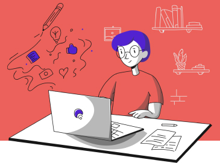

ВОЗМОЖНОСТИ

БЕЗ ПРОВОДОВ
Шлем работает без проводов. Не нужен ни компьютер, ни внешнее питание, ни большое помещение, чтобы расставить трекеры.
СОТНИ ИГР
Уже сейчас вам доступно более сотни игр: от высокобюджетных ААА-тайтлов до маленьких независимых проектов. Скоро их станет еще больше.

БЕЗ КОМПЬЮТЕРА
Современным VR-шлемам нужен мощный компьютер, чтобы запускать игры. Наш шлем запускает игры из облака, поэтому просто наслаждайтесь.
ПОЧТИ ДАРОМ
По сравнению с другими VR-шлемами наш стоит гораздо меньше. И вы существенно экономите на мощном компьютере.
